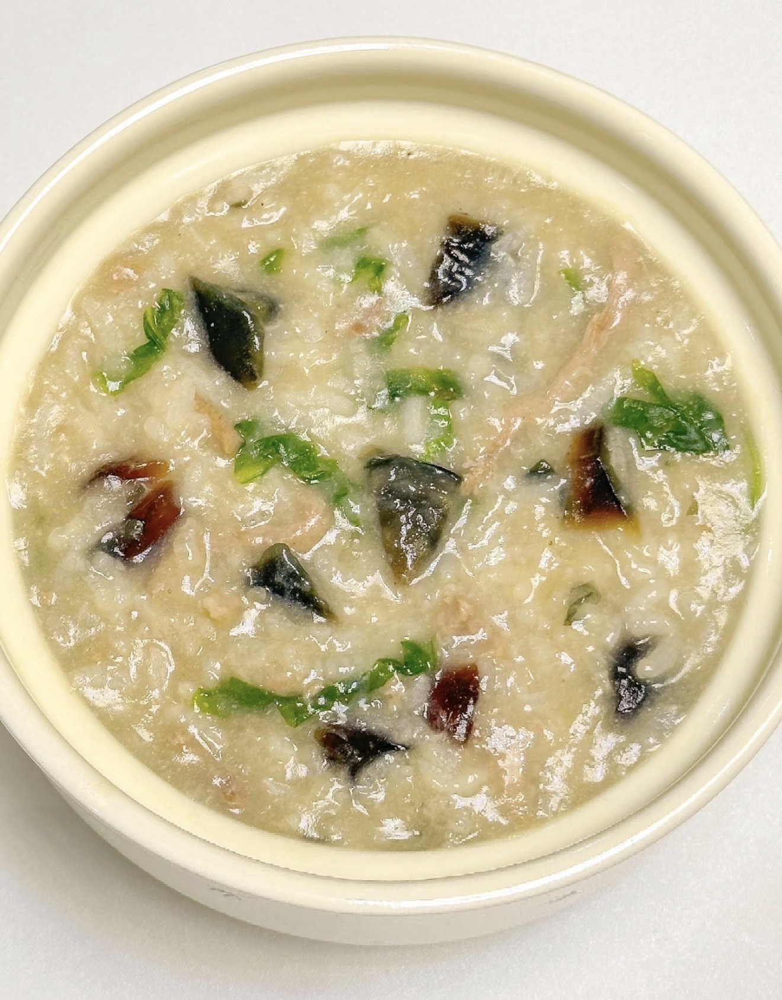
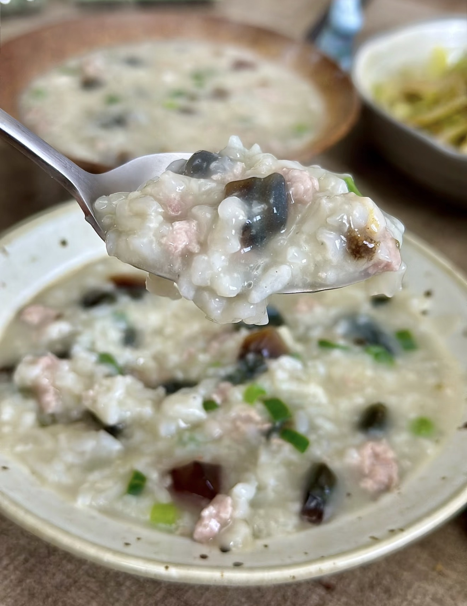
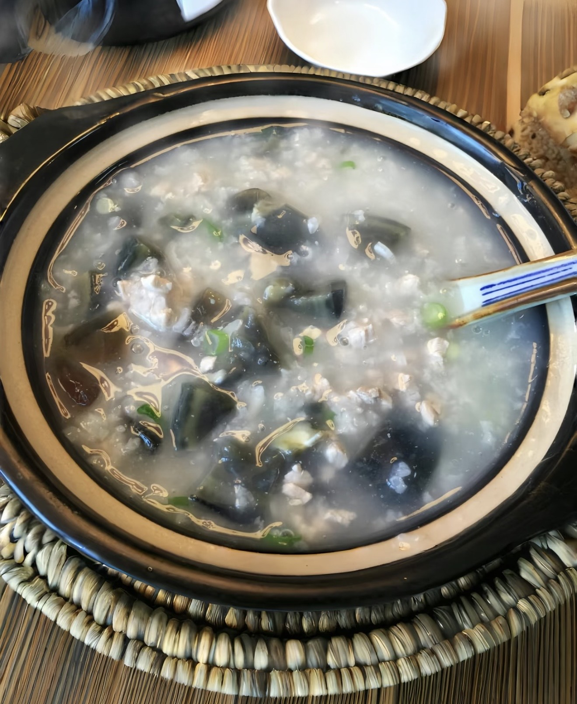

Century Egg Congee
皮蛋瘦肉粥 — Classic comforting rice porridge.
Ingredients
- 1 cup rice
- 100 g minced pork
- 1 century egg
- 1 tsp ginger, minced
- Salt to taste
Directions
- Boil rice with water until the porridge becomes thick and creamy.
- Add minced pork and cook for about 5 minutes.
- Dice the century egg and stir it into the congee.
- Season with salt and serve hot.